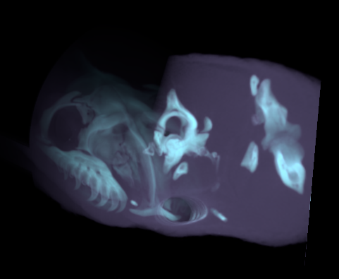
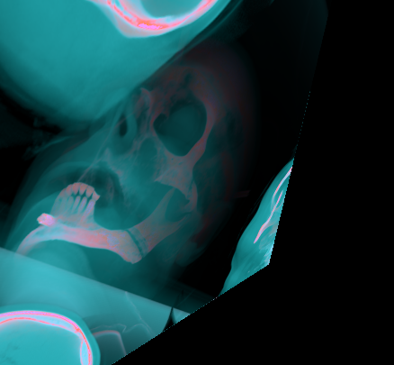
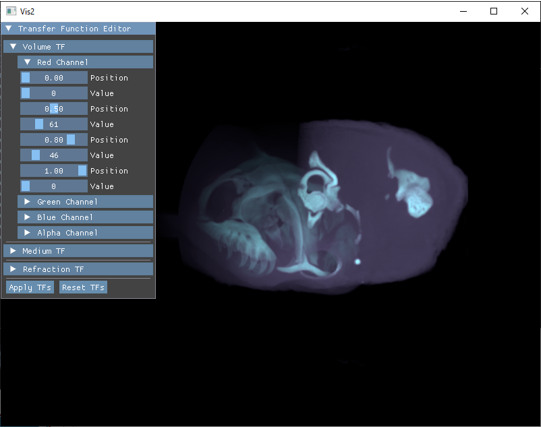
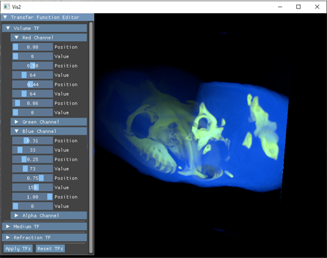

Interactive Dynamic Volume Illumination with Refraction and Caustics
Author: Matthias Zezulka


Introduction
This project implements the 3D volume visualization approach presented by J. G. Magnus and S. Bruckner presented in their paper "Interactive Dynamic Volume
Illumination with Refraction and Caustics" in 2017. However, due to the restricted time scope and the quitting of one project member, the current project
state is only semi-functioning. In the following sections, we cover various implementation aspects followed by a quick user guide. In the end, we briefly
discuss the data sets used during the implementation process.
Implementation
This project uses C++ 17 in combination with the Vulkan SDK (Verison 1.3.296.0). Aditionally, we use various libraries such as GLM, GLFW, STB Image, ImGui and TkSplines which are all added via Git submodules.
Generally, the structure of the program is very simple in that we have an arcball camera, that reacts to mouse input (i.e. dragging and scrolling) and a render loop that
updates this camera and draws the volume based on the parameters of the camera.
The important part now is how we implemented the rendering of the volume. According to the paper, we use the following per-frame sequence of steps:
- The model is centered in the scene and bound by a bounding sphere. View space coordinates of the first and
last cutting plane is calculated. The number of cutting planes can be defined by the user (default 400).
- A compute shader initializes 2 times 6 framebuffers based on their intended function. In particular, it initializes two sets of
each one viewing ray position buffer, viewing direction buffer, light buffer, light direction buffer, medium buffer and color buffer.
These buffers will be used to propagate information from cutting plane to cutting plane in a ping-pong manner when running the main algorithm.
- The fixed number of planes is drawn through the volume from front to back using a fragment shader that implements
the concept of the paper. The final result of this step is located in the color buffer.
- A second compute shader draws on a cubemap texture based on the resulting contents of the light direction buffer and light buffer in order to simulate
refraction.
- Finally, basic drawing shaders draw the resulting environment map from step 4, and plane from step 3 is drawn on the screen.
Note that, even though some parts exist in the project source, the environment map feature is currently not working.
User Guide
In order to achieve interactivity, we not only implement a camera but also transfer functions (TFs) to have manual control over the rendered volume.
In particular, we implement three transfer functions as suggested by the authors: a volume TF, a medium TF, and a refraction TF. Note that currently, we are only
able to successfully use the volume TF. All functions have, per RGBA channel three fixed control points (covering density values [0,1]) with respective values (covering color values [0,255]). We use these
points for spline interpolation (using the TkSplines library) which we then encode in a texture and pass to the shader. After changing the function values, the button "Apply TFs" has to be used in order to apply the new values.
The figures below show an application of these functions.


ATTENTION: Due to a bug the volume is rotated arround the y-axis (i.e. the up-axis) and therefore not visible. By draging
the mouse and rotating the camera around the volume, the result can be made visible.
Data
Currently, we include only two data sets in our project. First the human head scan by
The Visible Human Project and secondly
the black-headed python by the
Digital Morphology Library. In preprocessing, we
changed both datasets to consist of a numbered series of JPEG images of size 512x512. Different datasets can be used, but currently have to follow the size and naming conventions. In particular, 512x512 pixels and named
index.jpg, where index ranges from 1 to the number of pictures, without leading zeros.
Further the number of loaded images has to be changed manually in the code (
Vis.cpp in loadAssets()).
Links
Some useful links for this project: